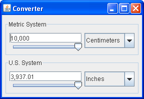

La clase
JPanel
ofrece contenedores de propósito general para componentes ligeros. Por defecto, los paneles no añaden colores
a nada excepto su propio fondo; sin embargo, puedes facilmente añadir bordes a ellos y de otra forma
personalizar su pintado. Los detalles se encuentran en
Realizar Pintado Personalizado.
En muchos tipos de apariencias, los paneles son opacos por defecto. Los paneles opacos funcionan bien como
paneles de contenido y pueden ayudar con el pintado eficientemente, como se describe en
Usar Contenedores de Nivel Superior. Puede
cambiar la transpariencia de un panel invocando el método setOpaque. Un panel transparente no
dibuja su fondo, por lo que se muestra cualquier componente que hay debajo.
La siguiente foto muestra una versión coloreada de la aplicación Convertidor, la cual es descrita
en más detalles en Usar Modelos.
El ejemplo Convertidor usa paneles de varias formas:
JPanel ─ coloreada de rojo en la instántanea precedente
─ sirve como un panel de contenido para el marco de la aplicación. Este panel de contenido
usa un BoxLayout de arriba
hacia abajo para diseñar su contenido, y un borde vacío para poner 5 píxeles de espacio alrededor de ellos.
Vea Usar Contenedores de Nivel Superior para más información sobre los paneles
de contenido.
JPanel llamada ConversionPanel
─ coloreada de cián ─ es usda para contener los componentes y coordinar la
comunicación entre componentes. Estos paneles ConversionPanel también tienen bordes titulados,
los cuales describen sus contenidos y encierran los contenidos con una línea. Cada panel
ConversionPanel usa un objeto BoxLayout de-izquierda-a-derecha para diseñar sus
contenidos.
ConversionPanel, una instancia de JPanel ─ coloreado de
magenta ─ es usada para asegurar el tamaño y posición apropiado del cuadro combinado. Cada
una de estas instancias JPanel usa un objeto BoxLayout de-arriba-a-abajo (ayudado
por un componente invisible que llena el espacio) para diseñar el cuadro combinado.
ConversionPanel, una instancia de una subclase sin nombre JPanel
─ coloreado de azul ─ agrupa dos componentes (un campo de texto y un
deslizador) y restringen su tamaño.
Cada una de estas instancias JPanel usa un objeto BoxLayout de arriba-a-abajo para
diseñar su contenido.
Así es como se ve normalmente la aplicación Convertidor.

Como el ejemplo Convertidor demuestra, loa paneles son útiles para agrupar componentes, simplificar
el diseño de los componentes, y colocar bordes alrededor de los grupos de componentes. El resto de esta sección
da consejos sobre la agrupación y diseño de los componentes. Para la información sobre el uso de bordes, vea
Cómo Usar Bordes.
Como otros contenedires, un panel usa un gestor/admnistrador de diseño para posicionar y dimensionar sus
componentes. Por defecto, un gestor de diseño de paneles es una instancia de
FlowLayout, lo cual coloca los contenidos del panel en una fila.
Puede fácilmente hacer que un panel use otro gestor de diseño invocando el método setLayout
o espeficando un gestor de diseño cuando crea el panel. El último enfoque es preferible por razones de
rendimiento, ya que evita la creación innecesaria de un objeto FlowLayout.
Aquí tien un ejemplo de cómo establecer el gestor de diseño cuando crea el panel.
JPanel p = new JPanel(new BorderLayout()); //¡PREFERIDO!
Este enfoque no funciona con BoxLayout, ya que el constructor BoxLayout requiere un
contenedor pre-existente. Aquí hay un ejemplo que usa BoxLayout.
JPanel p = new JPanel();
p.setLayout(new BoxLayout(p, BoxLayout.PAGE_AXIS));
Cuando añade componentes a un panel, usa el método add. Exactamente qué argumentos especifique
para el método add depende de qué administrador de diseño utiliza el panel. Cuando el gestor de
diseño es FlowLayout, BoxLayout, GridLayout, o SpringLayout,
usará tipicamente el método de un-argumento add, como esto:
aFlowPanel.add(aComponent);
aFlowPanel.add(anotherComponent);
Cuando el gestor de diseño es BorderLayout, necesita ofrecer un argumento especificando la
posición del componente añadido dentro del panel. Por ejemplo:
aBorderPanel.add(aComponent, BorderLayout.CENTER);
aBorderPanel.add(anotherComponent, BorderLayout.PAGE_END);
Con GridBagLayout puede usar el método add, pero debe de alguna forma especificar
restricciones en la rejilla para cada componente.
Para tener información sobre la elección y uso de los gestores de diseño estándar, vea Uso de Gestores de Diseño.
La IPA de la clase JPanel por sí misma es mínima. Los métodos que va a invocar más frecuentemente
sobre un objeto JPanel son aquellos que heredan de sus superclases ─
JComponent,
Container, y
Component. Las
siguientes tablas listan la IPA que usted va a usar más frecuentemente, con la excepción de los métodos
relacioneados con los
bordes y consejos de diseño.
Para más información sobre la IPA que todos los objetos JComponent pueden usar, vea
la Clase JComponent.
JPanel| Constructor | Proposito |
|---|---|
|
JPanel()
JPanel(LayoutManager) |
Crea un panel. El parámetro LayoutManager ofrece un gestor de diseño para el nuevo panel.
Por defecto, un panel usa un FlowLayout para desplegar sus componentes.
|
| Método | Proposito |
|---|---|
|
void add(Component)
void add(Component, int) void add(Component, Object) void add(Component, Object, int) void add(String, Component) |
Añade el componente especificado al panel. Cuando está presente, el parámetro int es el
índice del componente dentro del contenedor. Por defecto, el primer componente añadido está en el índice
0, el segundo está en el índice 1, y así. El parámetro Object depende del gestor de diseño
y típicamente ofrece información al gestor de diseño relativo al posicionamiento y otras restricciones
de diseño para el componente agregado. El parámetro String es similar al parámetro
Object.
|
| int getComponentCount() | Obtiene el número de componentes en este panel. |
|
Component getComponent(int)
Component getComponentAt(int, int) Component getComponentAt(Point) Component[] getComponents() |
Obtiene el componente especificado o componentes. Puede obtener un componente basado en su índice o la posición x, y. |
|
void remove(Component)
void remove(int) void removeAll() |
Elimina el/los componente(s) especificado(s). |
| Método | Proposito |
|---|---|
|
void setLayout(LayoutManager)
LayoutManager getLayout() |
Establece u obtiene el gestor de diseño para este panel. El gestor de diseño es responsable de posicionar los componetes del panel dentro de los límites del panel de acuerdo a alguna estructura. |
Muchos ejemplos contenidos en esta lección usa objetos JPanel. La siguiente tabla lista unas pocas.
| ejemplo | Dónde Está Escrito | Notas |
|---|---|---|
Convertidor |
Esta sección |
Usa cinco paneles, cuatro de los cuales usan BoxLayout y uno de los cuales usa
GridLayout. Los paneles usan bordes y, según sea necesario, sugerencias de tamaño y
alineación para afectar el diseño.
|
ListDemo |
Cómo Usar Listas |
Usa un panel, con su gestor FlowLayout por defecto, para centrar tres componentes en una
fila.
|
ToolBarDemo |
Cómo Usar Barras de Herramientas |
Usa un panel como un panel de contenido. El panel contiene tres componentes, presentados por
BorderLayout.
|
BorderDemo |
Cómo Usar Bordes |
Contiene muchos paneles que tienen varias clases de bordes. Varios paneles usan BoxLayout.
|
BoxLayoutDemo |
Cómo Usar BoxLayout | Ilustra el uso de un panel con el gestor de Swing BoxLayout. |